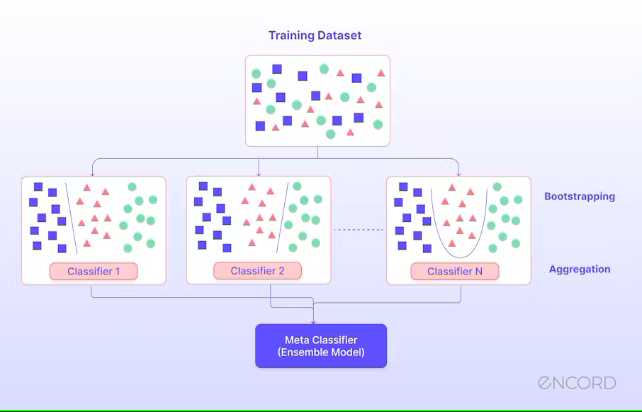
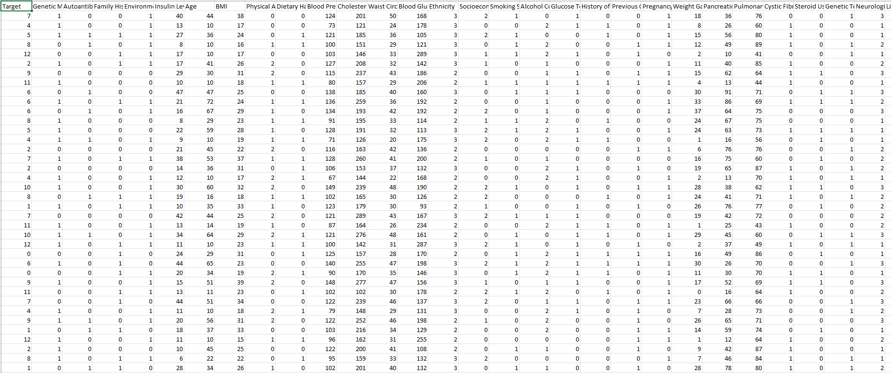
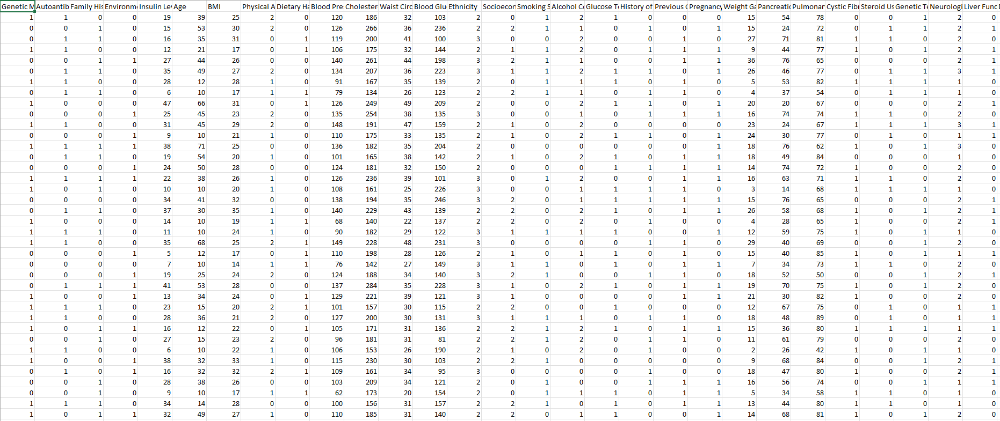
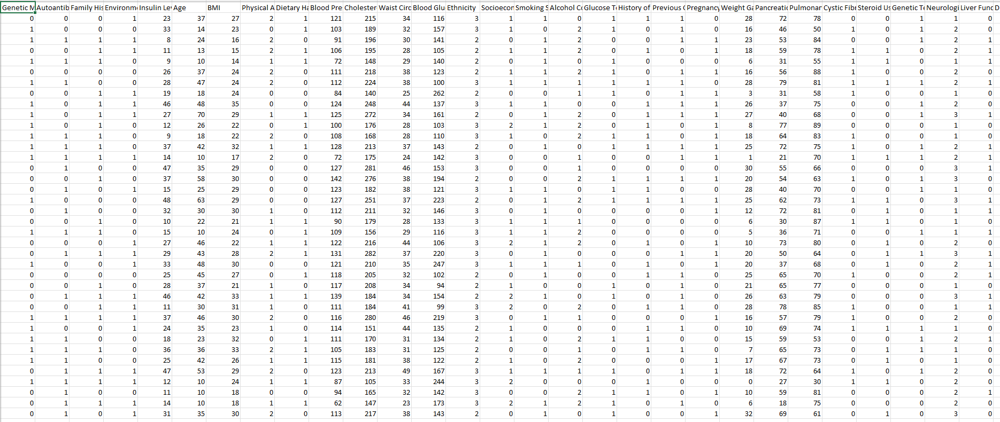
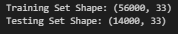
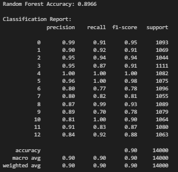
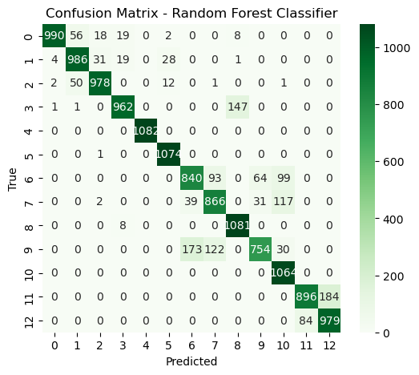

What is Ensemble Learning?
Ensemble learning is a machine learning technique where multiple models are combined to produce a more accurate and stable prediction than a single model. Instead of relying on one decision, it aggregates the decisions of multiple models.
Method Used: Random Forest
Random Forest is an ensemble method based on Decision Trees. It builds multiple trees and merges their results (through voting) to improve predictive performance and reduce overfitting.

Why Random Forest for Diabetes Prediction?
- Handles large feature spaces and multiclass classification well.
- Reduces the risk of overfitting by averaging results from multiple trees.
- Provides feature importance rankings, useful in healthcare datasets.
GitHub Repository
View Ensemble Code on GitHub ↗Data Preprocessing Steps
Step 1: Load and Explore the Data
We loaded the pre-processed dataset (dt_prepared.csv) and explored the feature structure and target distributions.

Step 2: Train-Test Split
The dataset was split into 80% for training and 20% for testing, ensuring stratified sampling to maintain class proportions.
Training Data Preview

Download Training Data CSVTesting Data Preview

Download Testing Data CSVDataset Summary
Total number of train & test samples in the dataset:

Model Results
Random Forest Performance
- Accuracy: 89.66%
- Macro Avg F1-Score: 0.90
- Weighted Avg F1-Score: 0.90


Classification Report Overview
- High precision and recall for most classes (especially 0, 4, 5, and 10).
- Classes 6, 7, and 9 had slightly lower precision and recall, indicating room for further optimization.
- Very balanced performance across all diabetes categories.
Final Results and Conclusion
Technical Insights
- Strong Performance: Random Forest achieved a high accuracy of approximately 90%, consistently performing well across multiple diabetes risk categories.
- Handling Complexity: The model handled large numbers of features and multi-class classification with ease, thanks to the ensemble nature of combining multiple weak decision trees.
- Overfitting Prevention: By using bootstrapped sampling (bagging) and random feature selection at each split, Random Forest minimized the risk of overfitting compared to a single Decision Tree.
- Interpretability: Although individual trees in the forest are complex, Random Forest allows insight into feature importance helping healthcare researchers understand which factors most influence predictions (e.g., blood glucose levels, genetic markers).
- Resilience to Noise: Outliers and noisy samples had less influence because multiple trees voted independently, making the final model more stable and reliable.
Non-Technical Takeaways
Imagine asking hundreds of doctors for a diagnosis instead of just one that's the idea behind Random Forest. Each "doctor" (tree) gives a suggestion, and the Random Forest combines these opinions to make a better, smarter final decision. This teamwork approach means the model is less likely to make big mistakes and more confident in its predictions. Even if one tree guesses wrong, the others balance it out, leading to more accurate results for patients.
Final Takeaway
Random Forest demonstrates that building a strong model doesn't mean relying on a single complex solution. Instead, combining multiple simpler models and averaging their outcomes leads to superior performance, especially in sensitive fields like healthcare. In this diabetes prediction project, Random Forest provided robustness, improved classification accuracy, and maintained transparency, making it a highly reliable tool for clinical data analysis.